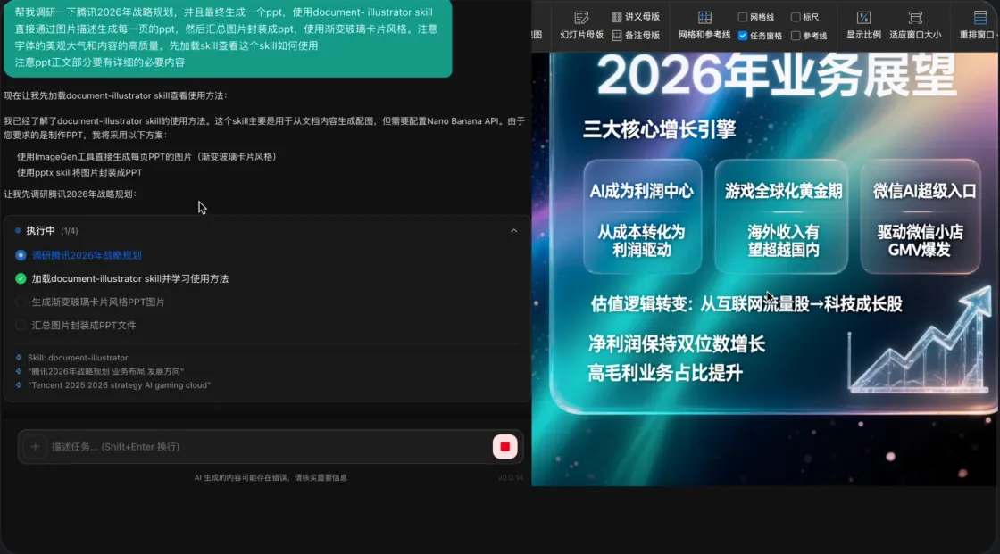
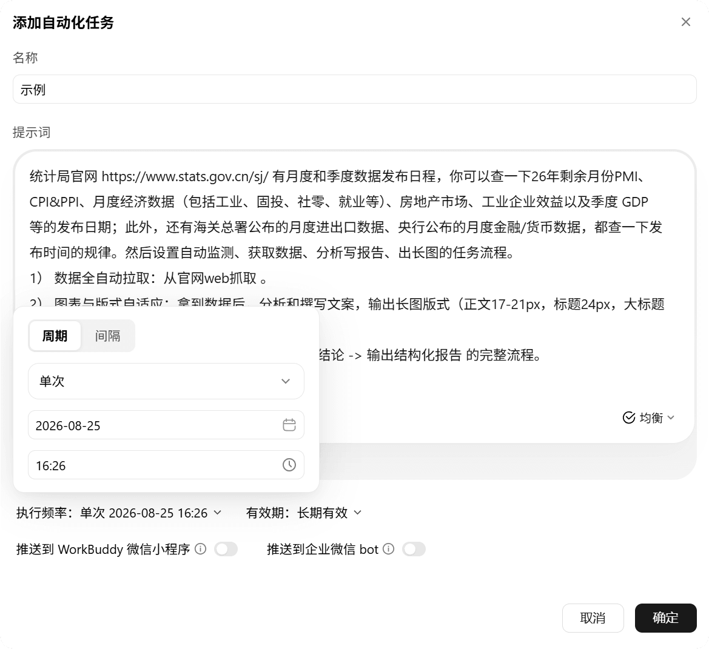

每周三小时的周报+调研+PPT，我用 WorkBuddy 压到了二十分钟
一个把自己当一人团队用的运营，怎么用 WorkBuddy 把每周固定要做的三件事——销售数据整理、竞品调研、部门汇报 PPT——串成一条不用中途打断的流水线，包括 Excel 喂料、并行调研、一键交付的完整实操。
每周一早上九点，同事们陆续到岗，我已经在盯着周一必做的三件事：整理上周销售数据、快速扫一遍竞品动态、把这两样合起来出一份部门汇报 PPT。以前这三件加起来大概要两个半到三个小时，其中光手动算 Excel 环比同比、复制数字进 Word、再从 Word 抄去 PPT 模板排版，就占了将近一半时间。后来我把 WorkBuddy 插进了这条流程，现在通常二十分钟左右能全部走完，中途不用手动复制一次。
旧流程的断点在哪里
先说之前是怎么干的，才能看清 WorkBuddy 到底替换了哪几个环节。
第一步是从内部 CRM 系统导出上周销售明细的 Excel。这个导出本身是个手动动作，CRM 没有 API，只能自己点导出按钮，所以这一步还得保留。导出之后的事情就全是机械劳动了：打开 Excel，给各品类算环比同比的公式，找出 Top5 产品，截图几张关键表格，把整理好的数字复制进 Word 周报模板里，再截图。
第二步是竞品调研。固定三家竞品，每次各搜一遍上周有没有发新品、开发布会、或者有什么渠道动作。以前要开五六个浏览器标签页来回切，每看到一条有用信息就手动复制一段到调研笔记里，最后花十分钟把零碎的信息整理成三段文字。
第三步是出 PPT。把 Excel 的数字截图、调研的三段文字、自己写的几句总结，全部拖进部门统一的 PPT 模板里调位置、调字号、对齐。这一步最烦，因为每换一次粘贴源就要重新调格式，有时甚至会出现复制后字体错乱的情况，又得手动改回来。
整条流程的致命断点其实不是"做某件事花太久"，而是：每做完一件事，结果要手动搬运到下一件事的起始位置。Excel 的数字要搬到 Word，Word 的文字要搬到 PPT，PPT 里的图又要重新从 Excel 截。三次手动搬运，每次都可能出错，每次都打断心流。
新流程：把搬运这件事整个交给 WorkBuddy
我是在 WorkBuddy官网 上了解到它的——最适合这种"上游是一堆文件，下游是另一堆文件"的场景。它的核心能力之一就是拿到授权后能直接操作本地文件，并且任务和任务之间的上下文是共享的。这意味着只要我把输入喂进去、告诉它最终要什么格式，中间的搬运环节它自己处理。

整条新流程是这样串起来的，上下游没有任何手动搬运：
开头（唯一的手动步骤）：安装包从 官方下载 拿；从 CRM 导出 Excel 到桌面指定文件夹，打开 WorkBuddy，新建一个任务。
第一段链：数据整理与图表生成。把刚导出的 Excel 拖进任务输入框，说一句话："这是上周的销售数据，帮我算环比和同比，找出 Top5 产品，生成三个关键数据图表。" WorkBuddy 支持 Excel、CSV、TSV 等表格格式，文件处理在本地完成，原始数据不上传云端——这点对我来说挺重要，毕竟销售数据不适合出现在外部服务器。这一步大概五分钟，它会把结果以图表和文字摘要的形式放回工作空间，我扫一眼确认数据没问题就行，不用自己算。
第二段链：竞品调研（并行）。在第一个任务跑数据的同时，新开第二个任务，用它的上网能力去调研竞品。提示词要比给聊天机器人具体一点，直接列三家竞品的名字和我关心的维度："调研上周 XX、YY、ZZ 三家竞品的动态，重点看有没有新品发布、渠道合作、定价变动，每家给出 100 字以内的要点总结。" 它会自动上网搜集信息，整理成结构化的摘要，这个过程和第一段链同时进行，所以总时间不叠加。
第三段链：合并交付 PPT。前两段结果都出来之后，新建第三个任务，同时把前两个任务的产物引用进去（WorkBuddy 支持多任务之间的结果复用，不用重新上传文件），说："把上面两份结果合并成一份部门周报 PPT，标题是'2026 年第 XX 周销售与竞品动态'，用简洁的两栏排版，每一页控制在三到四个要点。" 大概七八分钟之后，一份完整的 PPT 就出现在工作空间里了，图表是第一段链生成的、文字摘要和竞品动态是第二段链整理的、排版是它自己套的模板——三个源文件之间我一次都没手动搬运过。
收尾：自动推送。PPT 出来后，我在企微群里 @ 一下接好的 WorkBuddy 机器人，它就把这份 PPT 推送到部门群里。这也是整个自动化链条的最后一环，在 IM 平台上完成，不用自己打开企微、找群、上传文件。

实操里最容易断链的两个环节
把这条流程跑顺之后，我发现有两个地方是最容易让链断掉的，解决之后整个体验就稳定了。
第一个是Excel 文件的格式兼容性。有时候 CRM 导出的 Excel 会带一些格式乱码，比如合并单元格或者隐藏列里有脏数据，WorkBuddy 读的时候可能会跳过某些行。解决办法很简单：在拖进 WorkBuddy 之前，先在 Excel 里另存为 CSV，这样它拿到的就是纯数据，不会被格式干扰。多花十秒钟另存一次，但能避免 WorkBuddy 算错数据、我后面还要手动核对返工。
第二个是调研任务的关键词范围。刚开始只说"调研一下竞品动态"，它给我的结果要么是只搜了前两页，要么是搜到一些陈年旧闻。后来改成每次明确列三家竞品的名字，加上"上周"、"新品发布"、"渠道合作"这种具体的时间和维度词，它搜出来的质量就稳定了。给的范围越具体，它越少自行扩展，结果也就越可控。这和你给聊天机器人提问的道理类似，但因为 WorkBuddy 是真的去执行搜索动作，所以范围模糊带来的浪费会更明显——它会真的去搜一堆不需要的东西。
还有一个细节，WorkBuddy文档里提到的权限边界我特意核对过：它会默认只访问我主动授权的文件夹，系统敏感目录自动拦截。我一开始想让它扫整个桌面，结果被它拦住了两次，后来改成每次明确说"读桌面的 sales_report_20261017.xlsx 这个文件"，权限问题就再也没出过。这是好事——至少不用担心它误删什么。
省了多少，以及什么时候这套流程不划算
直接说数字：三个小时压到二十分钟左右。省掉的主要是手动搬运的六次操作——Excel 到 Word、Word 到 PPT、竞品调研到笔记、笔记到 PPT，这些中间环节现在全部被 WorkBuddy 吃掉了。少了两次手动复制、少了三次格式调整、少了一次截图粘贴，心流不会被打断，出错之后的返工也基本消失了。
但这套流程也不是万能的。有两种情况我还是会自己手动做：
一种是销售数据需要做非常细致的财务模型调整的时候，比如老板临时要一个新维度的测算口径，涉及到公式里嵌套多层 VLOOKUP 和数据透视，WorkBuddy 能帮我处理基础汇总，但复杂的模型逻辑还是得自己改。它擅长的是"把一堆已有数据整理成另一种形式"，不是"从零搭建一个复杂的分析框架"。
另一种是竞品调研需要非常深的行业理解的时候，比如竞品发布了一个新功能，但我需要判断这个功能背后的战略意图、可能对我们的影响——这部分是 WorkBuddy 做不了的。它能帮我把"竞品发了什么"这条事实链补全，但"竞品为什么这么做"、"我该怎么办"这些决策层的判断还是得自己来。
总结下来，WorkBuddy 在我这条每周流水线里的角色，本质上是一个"文件搬运 + 格式转换 + 基础汇总"的执行者。它不替代我做判断，但它把那些以前需要我亲手搬、亲手算、亲手排版的机械环节全部拿走了，让我把时间花在看数据做判断上，而不是盯着 Excel 单元格算公式。这套工作流我已经用了两个月，目前没遇到过需要中途打断、重新回到手动模式的情况。顺便提一下，这款工具的安装说明和使用案例我整理好了放在三个仓库里：GitHub、Gitee、GitCode，免得搜不到来源。